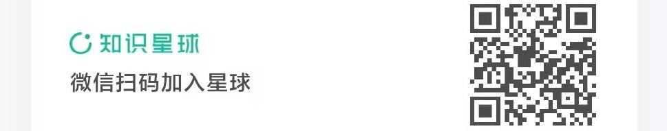
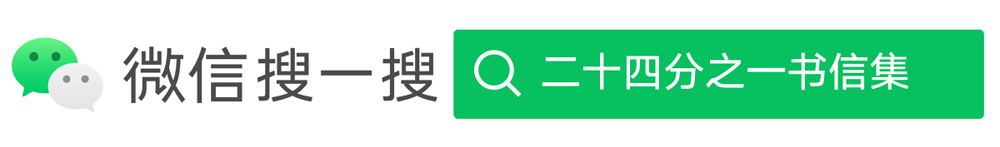

「二十四分之一」书信集
「二十四分之一」书信集是由名下于2021年12月21日启动的专栏，寓意为：每天一小时，与这个世界聊聊天 / 在此，我将以书信的形式，透过真实、真诚的文字，分享我的故事、观点以及作品。
专栏对外提供两种阅读渠道：知识星球年度订阅、微信公众号单篇付费
知识星球订阅：书信首发地、深度交流区

该专栏依年度付费订阅（128元），之所以选择付费是因为：我期盼握住主动倾听者的手；写信本就是一件私密的事情；在朋友面前，我是自由和舒适的，包括表达；在安静和有深度的交流面前，阅读量毫无意义。
对于这个星球的成员，我想说：记得每天早上，查收和阅读来信；你的评论或者提问会被我视为回信；我会给“回信”回信（见第二封信）；如果你有“未被听过的故事”，我愿意倾听。
微信公众号阅读：按需阅读专区

我们的微信公众号是：二十四分之一书信集，在这里我们将会依照每封信的主题提供：免费、付费两种阅读模式（每篇单独定价），欢迎您来阅读，更期待您给我们回信。
书信集目录
- 第一封信：从至暗之夜出发
- 第二封信：挂念，是孤岛长出的桥
- 第三封信：读书学习两码事
- 第四封信：照见自己的镜子
- 第五封信：2021的三个幸福瞬间
- 第六封信：2022的三个全新挑战
- 第七封信：意志力，不可估量的价值
- 第八封信：藏在心里的童话
- 第九封信：折磨人的想象
- 第十封信：为自我成长的书写
- 第十一封信：离自然最近的地方
- 第十二封信：渐行渐远的旅程
- 第十三封信：养育一个孩子
- 第十四封信：给自己定个价
- 第十五封信：打造自己的大船
- 第十六封信：数字时代的内容自由
- 第十七封信：最美的礼物——《四时雅韵》的缘起
- 第十八封信：我是如此幸运的人
- 第十九封信：最美的礼物——《四时雅韵》的特点（上）
- 第二十封信：最美的礼物——《四时雅韵》的特点（下）
- 第二十一封信：悲悯这人世间
- 第二十二封信：最美的礼物——《四时雅韵》的编选历程
- 第二十三封信：养育中的进退
- 第二十四封信：婚姻里的相处
- 第二十五封信：躺平与摸鱼
- 第二十六封信：最美的礼物——《四时雅韵》如何使用
- 第二十七封信：看见树木也看见森林
- 第二十八封信：在看不见的地方
- 第二十九封信：爱具体的人和事
- 第三十封信：关于死亡的记忆
- 第三十一封信：留心那些警示
- 第三十二封信：山神的果树
- 第三十三封信：有故事的食物
- 第三十四封信：雪未停，电停了
- 第三十五封信：那些不能挺且直的竹子们
- 第三十六封信：对抗死亡，书写的又一个意义
- 第三十七封信：三个美梦
- 第三十八封信：不知去处的自行车 2月2日
- 第三十八封信：不知去处的自行车 2月3日
- 第三十八封信：天才的意义
- 第三十八封信：重建关系的难度
- 第三十八封信：与一只蜗牛偶遇
- 第三十八封信：一个完整的家
最后更新：2022年2月7日、返回个人介绍页